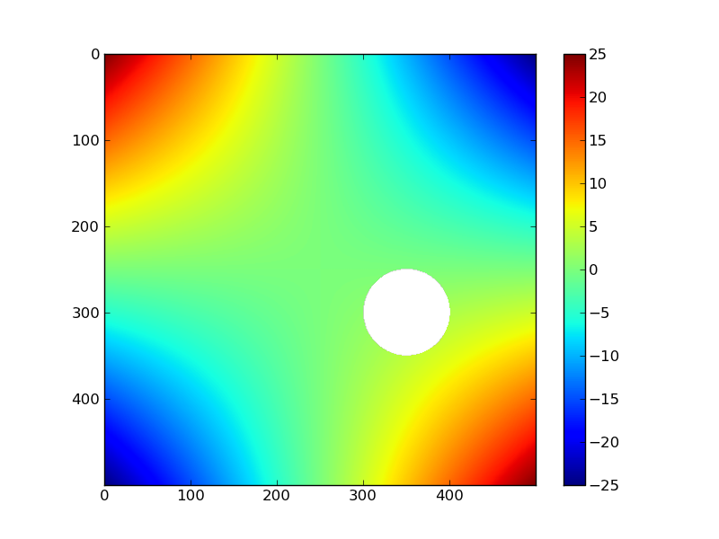
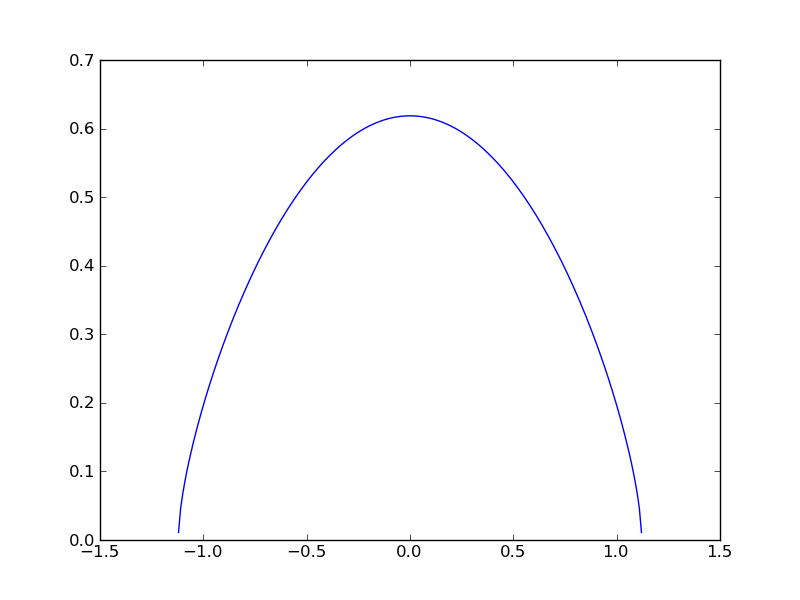
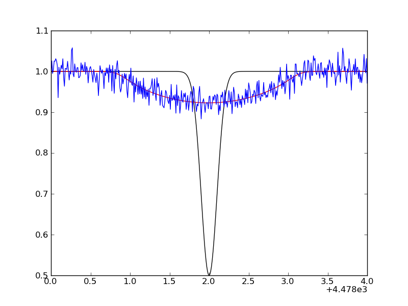
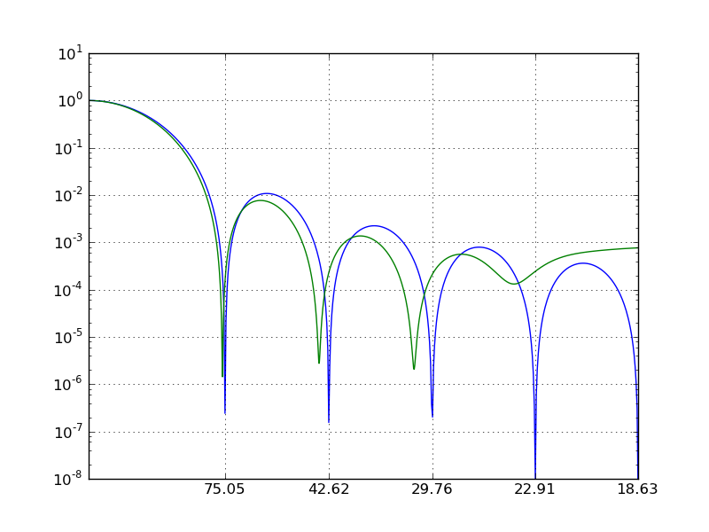

Scipy FFT¶
Contents
In this tutorial, we dig a bit deeper in scipy’s 1D FFT capabilities, exploring rotational broadening in stellar spectra along the way. For a full list of available functions, see http://docs.scipy.org/doc/scipy/reference/fftpack.html.
The flow of the programming is as follows (see, e.g., Carroll 1933, Dravins 1990, Reiners 2001, Simon-Diaz 2006):
- First, we construct a rotational broadening kernel assuming a linear limb-darkened star
- We generate a synthetic spectral line, and convolve it with the kernel using fftconvolve.
- We add some noise on the spectrum.
Next, we assume we don’t know the projected equatorial velocity, and derive it from the generated spectrum, using the Fourier method. We compare an oversampled computed Fourier transform (fft) with the analytical one. So the steps are:
- Compute the fft of the generated spectrum and compare with the analytical one (of the broadening kernel only)
- Compare the output vsini with input value.
Getting started¶
We need a lot of functions. First, we import the Fourier functions:
<<<<<<< HEADfrom scipy.fftpack import fft,fftfreq
from scipy.signal import fftconvolve
=======
In [1]: from scipy.fftpack import fft,fftfreq
In [2]: from scipy.signal import fftconvolve
>>>>>>> 4d376b64af6a2459d9986f4b3d4f75d6fb2b2c9f
For the analytical computation of the Fourier transformation, Bessel functions
are required:
<<<<<<< HEAD
from scipy.special import j1
=======
In [1]: from scipy.special import j1
>>>>>>> 4d376b64af6a2459d9986f4b3d4f75d6fb2b2c9f
And of course the usual imports. An explicit import of pi, sin, cos
and sqrt is done to avoid extensive use of np. which could make the code
less readable.
<<<<<<< HEAD
import pylab as plt
import numpy as np
from numpy import pi,sin,cos,sqrt
=======
In [1]: import pylab as plt
In [2]: import numpy as np
In [3]: from numpy import pi,sin,cos,sqrt
>>>>>>> 4d376b64af6a2459d9986f4b3d4f75d6fb2b2c9f
To finalize the setup, we need some constants. We define them here explicitly,
but there exists a module scipy.constants, with an
extensive list of physical constants. However, it does not contain specifical astronomical constants such as the solar mass (see Prsa & Harmanec 2011).
<<<<<<< HEAD
midwave = 4480. # central wavelength of line
cc = 2.99792458e+18 # velocity of light in angstrom/s
epsilon = 0.6 # linear limbdarkening parameter
vsini = 75.*1e13 # input vsini in A/s (75 km/s)
dlam = 0.01 # spectrum resolution (A)
delta = midwave*vsini/cc
=======
In [1]: midwave = 4480. # central wavelength of line
In [2]: cc = 2.99792458e+18 # velocity of light in angstrom/s
In [3]: epsilon = 0.6 # linear limbdarkening parameter
In [4]: vsini = 75.*1e13 # input vsini in A/s (75 km/s)
In [5]: dlam = 0.01 # spectrum resolution (A)
In [6]: delta = midwave*vsini/cc
>>>>>>> 4d376b64af6a2459d9986f4b3d4f75d6fb2b2c9f
We will add some noise to a generate spectrum. To be able to reproduce the results,
we make sure that we always add the same noise, regardless of how many times
we run the script:
<<<<<<< HEAD
np.random.seed(1111)
=======
In [1]: np.random.seed(1111)
>>>>>>> 4d376b64af6a2459d9986f4b3d4f75d6fb2b2c9f
The analytical broadening kernel¶
The rotational broadening function G is only defined on a certain wavelength interval, but
we’ll be lazy and solve that issue later. For now, we make the wavelength interval
broad enough, i.e. +/- 5 angstrom, using the spectral resolution given above.
<<<<<<< HEAD
lambdas = np.linspace(-5,5,10./dlam+1) # wavelength interval
y = 1-(lambdas/delta)**2 # transformation of wavelengths
G = (2*(1-epsilon)*sqrt(y)+pi*epsilon/2.*y)/(pi*delta*(1-epsilon/3)) # the kernel
print(G)
=======
In [1]: lambdas = np.linspace(-5,5,10./dlam+1) # wavelength interval
In [2]: y = 1-(lambdas/delta)**2 # transformation of wavelengths
In [3]: G = (2*(1-epsilon)*sqrt(y)+pi*epsilon/2.*y)/(pi*delta*(1-epsilon/3)) # the kernel
invalid value encountered in sqrt
In [4]: print(G)
[ nan nan nan ..., nan nan nan]
>>>>>>> 4d376b64af6a2459d9986f4b3d4f75d6fb2b2c9f
The sqrt is of course only defined for positive numbers. For negative numbers,
numpy silently fills in nan (not a number).
Click to Show/Hide: NOTES on ``np.nan``
Note
in some versions of scipy and numpy, nan is not silently introduced,
but a warning is printed to the screen. You can avoid these print
statements via np.seterr(all='ignore').
In the example, we were lazy and let the nan be introduced in the
arrays. In general, you should be very careful with this behaviour,
since many statements will silently break if there are nan’s around:
<<<<<<< HEAD
x = np.random.normal(size=100)
x.std()
x[10] = np.nan
np.std(x) # std is not defined when there is a nan!
Some functions have an alternative that can handle nans:
np.nanmax(x)
but not all of them:
hasattr(np,'nanstd'), hasattr(np,'nansum')
=======
In [1]: x = np.random.normal(size=100)
In [2]: x.std()
Out[2]: 0.92660952831430687
In [3]: x[10] = np.nan
In [4]: np.std(x) # std is not defined when there is a nan!
Out[4]: nan
Some functions have an alternative that can handle nans:
In [1]: np.nanmax(x)
Out[1]: 2.68798062625826
but not all of them:
In [1]: hasattr(np,'nanstd'), hasattr(np,'nansum')
Out[1]: (False, True)
>>>>>>> 4d376b64af6a2459d9986f4b3d4f75d6fb2b2c9f
You might think np.nan is a good way to mask elements in an array,
e.g. when you want to compute the mean of an array. However, in the
previous note we’ve seen that numpy functions will return np.nan when
used on an array containing at least on np.nan. Numpy has a seperate
array class for arrays with masked values, appropriately named masked arrays:
<<<<<<< HEAD
x = np.random.normal(size=(4,4))
x
mask = x<0
y = np.ma.array(x,mask=mask)
y
=======
In [1]: x = np.random.normal(size=(4,4))
In [2]: x
Out[2]:
array([[-1.09748601, -0.71461959, 1.26747448, 0.43627688],
[-0.00978103, 0.65313941, 1.21553136, -0.83680687],
[ 0.82023114, -1.48203271, -0.56670933, -0.36410778],
[ 0.31660582, 0.49014734, -1.0654382 , 0.04824816]])
In [3]: mask = x<0
In [4]: y = np.ma.array(x,mask=mask)
In [5]: y
Out[5]:
masked_array(data =
[[-- -- 1.26747447851 0.436276879326]
[-- 0.653139405632 1.21553136356 --]
[0.820231141228 -- -- --]
[0.316605819084 0.490147339063 -- 0.0482481581468]],
mask =
[[ True True False False]
[ True False False True]
[False True True True]
[False False True False]],
fill_value = 1e+20)
>>>>>>> 4d376b64af6a2459d9986f4b3d4f75d6fb2b2c9f
Notice that numpy actually uses a specific fill value for the masked values,
usually 1e+20, but you can control that value. Then finally, we can use
the normal numpy functions again:
<<<<<<< HEAD
x.std(),y.std()
x.min(),y.min()
=======
In [1]: x.std(),y.std()
Out[1]: (0.82416273813686614, 0.39910720469667699)
In [2]: x.min(),y.min()
Out[2]: (-1.4820327144374015, 0.04824815814678067)
>>>>>>> 4d376b64af6a2459d9986f4b3d4f75d6fb2b2c9f
matplotlib can handle np.nan:
<<<<<<< HEAD
X,Y = np.mgrid[-5:5:500j,-5:5:500j]
Z = X*Y
Z[np.sqrt((X-1)**2+(Y-2)**2)<1.] = np.nan
plt.imshow(Z);
plt.colorbar();
=======
In [1]: X,Y = np.mgrid[-5:5:500j,-5:5:500j]
In [2]: Z = X*Y
In [3]: Z[np.sqrt((X-1)**2+(Y-2)**2)<1.] = np.nan
In [4]: plt.imshow(Z);
In [5]: plt.colorbar();
>>>>>>> 4d376b64af6a2459d9986f4b3d4f75d6fb2b2c9f

We remove all the wavelength
and kernel elements wherever the kernel is not defined:
<<<<<<< HEAD
keep = -np.isnan(G) # returns boolean array with `False` where there are nans
lambdas,G = lambdas[keep],G[keep] # crop the arrays not to contain nans
lambdas.min(),lambdas.max()
=======
In [1]: keep = -np.isnan(G) # returns boolean array with `False` where there are nans
In [2]: lambdas,G = lambdas[keep],G[keep] # crop the arrays not to contain nans
In [3]: lambdas.min(),lambdas.max()
Out[3]: (-1.1200000000000001, 1.1200000000000001)
>>>>>>> 4d376b64af6a2459d9986f4b3d4f75d6fb2b2c9f
The broadening kernel is only defined between -1.12 and 1.12 A. We could have
foreseen this, since
<<<<<<< HEAD
1.12/midwave*(3e5) # approximate velocity in km/s of 1.12 angstrom at 4480A
Finally make a plot of the rotational kernel.
plt.plot(lambdas,G)
=======
In [1]: 1.12/midwave*(3e5) # approximate velocity in km/s of 1.12 angstrom at 4480A
Out[1]: 75.0
Finally make a plot of the rotational kernel.
In [1]: plt.plot(lambdas,G)
Out[1]: [<matplotlib.lines.Line2D at 0xa377bb0>]
>>>>>>> 4d376b64af6a2459d9986f4b3d4f75d6fb2b2c9f

The synthetic line¶
Suppose a line has an intrinsic Gaussian profile in absence of rotation:
<<<<<<< HEAD
wavelengths = np.arange(midwave-5,midwave+5+dlam,dlam)
spec_line = 1-0.5*np.exp( -(wavelengths-midwave)**2/(2*0.1**2)) # width of 0.1A
=======
In [1]: wavelengths = np.arange(midwave-5,midwave+5+dlam,dlam)
In [2]: spec_line = 1-0.5*np.exp( -(wavelengths-midwave)**2/(2*0.1**2)) # width of 0.1A
>>>>>>> 4d376b64af6a2459d9986f4b3d4f75d6fb2b2c9f
This needs to be convolved with the rotational broadening kernel. Scipy (and
numpy have a convolve function that does not use the FFT, but here we choose
to use the FFT version. We construct the new wavelength array for the convolved
spectrum, and make sure the equivalent width has not changed during the
convolution process:
<<<<<<< HEAD
spec_conv = fftconvolve(1-spec_line,G,mode='full')
N = len(spec_conv) # equals len(spec_line)+len(G)+1 when mode='full'
wavelengths_conv = np.arange(-N/2,N/2,1)*dlam + midwave
EW_before = np.trapz(1-spec_line,x=wavelengths) # trapezoidal integration
EW_after = np.trapz(spec_conv,x=wavelengths_conv)
spec_conv = 1-spec_conv/EW_after*EW_before
=======
In [1]: spec_conv = fftconvolve(1-spec_line,G,mode='full')
In [2]: N = len(spec_conv) # equals len(spec_line)+len(G)+1 when mode='full'
In [3]: wavelengths_conv = np.arange(-N/2,N/2,1)*dlam + midwave
In [4]: EW_before = np.trapz(1-spec_line,x=wavelengths) # trapezoidal integration
In [5]: EW_after = np.trapz(spec_conv,x=wavelengths_conv)
In [6]: spec_conv = 1-spec_conv/EW_after*EW_before
>>>>>>> 4d376b64af6a2459d9986f4b3d4f75d6fb2b2c9f
Click to Show/Hide: NOTE on numerical integration
Note
Scipy contains a package dedicated to integration: scipy.integrate. It
also contains the trapz function, implements the Simpson rule, and
provides quad and dblquad, that can integrate functions numerically
between limits (i.e., without you having to specify an x and y
array):
In [1]: from scipy.integrate import quad
In [1]: quad(lambda t: np.exp(-t) / t**5,1,np.inf)
Out[1]: (0.0704542374617277, 2.8164841189102693e-09)
The return value is a tuple, with the first element holding the estimated
value of the integral and the second element holding an upper bound on the
error.
The integrate package also contains an ODE solver odeint. See e.g.
the Zombie Apocalypse example.
Finally, we simulate an observed profile by adding random Gaussian noise:
<<<<<<< HEAD
spec_obs = spec_conv + np.random.normal(size=len(spec_conv),scale=0.02)
A plot of the unbroadened (black) and broadened line (red/blue) can be made with:
=======
In [1]: spec_obs = spec_conv + np.random.normal(size=len(spec_conv),scale=0.02)
A plot of the unbroadened (black) and broadened line (red/blue) can be made with:
In [1]: plt.figure(10);
In [2]: plt.plot(wavelengths,spec_line,'k-');
In [3]: plt.plot(wavelengths_conv,spec_conv,'r-');
In [4]: plt.plot(wavelengths_conv,spec_obs,'b-');
In [5]: plt.xlim(4478,4482)
Out[5]: (4478, 4482)
>>>>>>> 4d376b64af6a2459d9986f4b3d4f75d6fb2b2c9f

The analytical Fourier transform¶
Let’s get back to the rotational kernel. The analytical Fourier transform is
easily computed. First, we need to define the domain in frequency space on which
to compute the transform, and then we evaluate it. Note the use of scipy’s
Bessel function:
<<<<<<< HEAD
x = np.linspace(0,30,1000)[1:] # exclude zero
g = 2. / (x*(1-epsilon/3.)) * ( (1-epsilon)*j1(x) + epsilon* (sin(x)/x**2 - cos(x)/x))
g = g**2 # convert to power
x /= (2*pi*delta)
=======
In [1]: x = np.linspace(0,30,1000)[1:] # exclude zero
In [2]: g = 2. / (x*(1-epsilon/3.)) * ( (1-epsilon)*j1(x) + epsilon* (sin(x)/x**2 - cos(x)/x))
In [3]: g = g**2 # convert to power
In [1]: x /= (2*pi*delta)
>>>>>>> 4d376b64af6a2459d9986f4b3d4f75d6fb2b2c9f
Computing the Fourier transform¶
When calculating the FFT with fft, a complex array is returned. You can get
the real and imaginary part with y.real and y.imag, and the norm and
phase angle via np.abs(y) and np.angle(y). In this case,
we are only interested in the power. Also, we need to increase the frequency
resolution of the Fourier transform, so that we can nicely resolve the zeros.
This is done via zero padding, and there exists and optional keyword n to
the function fft to do just that. If you do not specify n, n equals
the length of the input array, otherwise the input array is zero-padded until
it is of size n. We choose to make our input array 100 times larger. Finally,
the Fourier method is sensitive to noise outside of the spectral line region.
Therefore, we cut the spectrum to have little continuum remaining.
<<<<<<< HEAD
keep = np.abs(midwave-wavelengths_conv)<1.2 # minimize contribution of continuum
spec_to_transform = (1-spec_obs)[keep] # we need the continuum at zero
new_n = 100*len(spec_to_transform) # new length for zeropadding
spec_fft = np.abs(fft(spec_to_transform,n=new_n))**2 # power of FFT
=======
In [1]: keep = np.abs(midwave-wavelengths_conv)<1.2 # minimize contribution of continuum
In [2]: spec_to_transform = (1-spec_obs)[keep] # we need the continuum at zero
In [3]: new_n = 100*len(spec_to_transform) # new length for zeropadding
In [4]: spec_fft = np.abs(fft(spec_to_transform,n=new_n))**2 # power of FFT
>>>>>>> 4d376b64af6a2459d9986f4b3d4f75d6fb2b2c9f
The domain of the Fourier transform is retrieved via fftfreq, but we exclude
the negative frequencies:
<<<<<<< HEAD
x_fft = fftfreq(len(spec_fft),d=dlam)
keep = x_fft>=0 # only positive frequencies
x_fft, spec_fft = x_fft[keep], spec_fft[keep]
=======
In [1]: x_fft = fftfreq(len(spec_fft),d=dlam)
In [2]: keep = x_fft>=0 # only positive frequencies
In [3]: x_fft, spec_fft = x_fft[keep], spec_fft[keep]
>>>>>>> 4d376b64af6a2459d9986f4b3d4f75d6fb2b2c9f
Measuring the vsini¶
The measured vsini corresponds to the first zero in the Fourier transform. Due
to discretization and noise, zero will never be reached, so we need to look for
local minima: those are the locations where the first derivative switches sign
from negative to positive:
<<<<<<< HEAD
neg_to_pos = (np.diff(spec_fft[:-1])<=0) & (np.diff(spec_fft[1:])>=0)
minima = x_fft[1:-1][neg_to_pos]
Let’s compare that to the minima from the analytical transform:
neg_to_pos = (np.diff(g[:-1])<=0) & (np.diff(g[1:])>=0)
minima_an = x[1:-1][neg_to_pos]
The frequency domain can be converted to velocity (km/s) as follows:
q1 = 0.610 + 0.062*epsilon + 0.027*epsilon**2 + 0.012*epsilon**3 + 0.004*epsilon**4
vsini_zeros = cc/midwave*q1/minima/1e13
vsini_zeros_an = cc/midwave*q1/minima_an/1e13
The first zero should be the input vsini:
print(vsini_zeros_an[:10])
print(vsini_zeros[:10])
=======
In [1]: neg_to_pos = (np.diff(spec_fft[:-1])<=0) & (np.diff(spec_fft[1:])>=0)
In [2]: minima = x_fft[1:-1][neg_to_pos]
Let’s compare that to the minima from the analytical transform:
In [1]: neg_to_pos = (np.diff(g[:-1])<=0) & (np.diff(g[1:])>=0)
In [2]: minima_an = x[1:-1][neg_to_pos]
The frequency domain can be converted to s/km (inverse velocity) as
follows:
In [1]: q1 = 0.610 + 0.062*epsilon + 0.027*epsilon**2 + 0.012*epsilon**3 + 0.004*epsilon**4
In [2]: vsini_zeros = cc/midwave*q1/minima/1e13
In [3]: vsini_zeros_an = cc/midwave*q1/minima_an/1e13
The first zero should be the input vsini:
In [1]: print(vsini_zeros_an[:10])
[ 75.05337352 42.62290348 29.76254467 22.91452554 18.6283553
15.6929781 13.53903993 11.91871754 10.63384553]
In [2]: print(vsini_zeros[:10])
[ 73.41007508 42.07296793 28.38522903 21.28892177 14.95008551
13.07673328 11.21650251 9.98542297 8.33552145 7.36640892]
>>>>>>> 4d376b64af6a2459d9986f4b3d4f75d6fb2b2c9f
Finally, we can make a nice plot: We use the s/A scaling on the x-axis, but
set the tickmarks to correspond to km/s.
<<<<<<< HEAD
plt.figure();
plt.plot(x,g/g.max());
plt.plot(x_fft,spec_fft/spec_fft.max());
plt.gca().set_yscale('log');
plt.xlim(0.0,0.05);
plt.ylim(1e-8,1e1);
plt.grid();
plt.xticks(minima_an[:5]*midwave/q1/cc*1e13,['{0:.2f}'.format(i) for i in vsini_zeros_an[:5]])
=======
In [1]: plt.figure();
In [2]: plt.plot(x,g/g.max());
In [3]: plt.plot(x_fft,spec_fft/spec_fft.max());
In [4]: plt.gca().set_yscale('log');
In [5]: plt.xlim(0.0,0.05);
In [6]: plt.ylim(1e-8,1e1);
In [7]: plt.grid();
In [8]: plt.xticks(minima_an[:5]*midwave/q1/cc*1e13,['{0:.2f}'.format(i) for i in vsini_zeros_an[:5]])
Out[8]:
([<matplotlib.axis.XTick at 0xade23f0>,
<matplotlib.axis.XTick at 0xadd9cb0>,
<matplotlib.axis.XTick at 0xadd2a30>,
<matplotlib.axis.XTick at 0xadd2df0>,
<matplotlib.axis.XTick at 0xadec210>],
<a list of 5 Text xticklabel objects>)
>>>>>>> 4d376b64af6a2459d9986f4b3d4f75d6fb2b2c9f

Copyright:
Smithsonian Astrophysical Observatory under terms of
CC
Attribution 3.0 
{kind=link}
{kind=link}
{kind=link}
{kind=link}